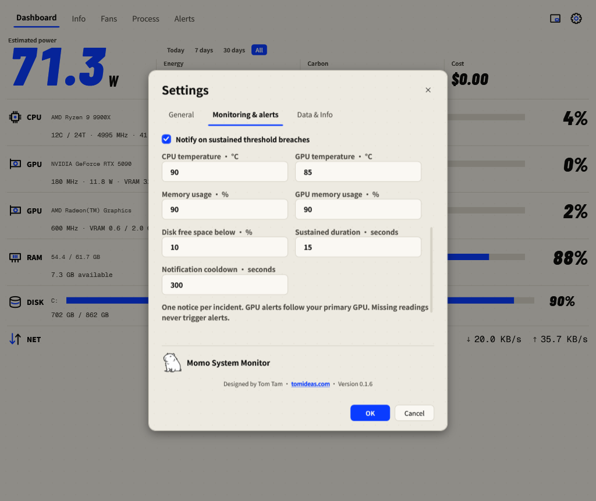
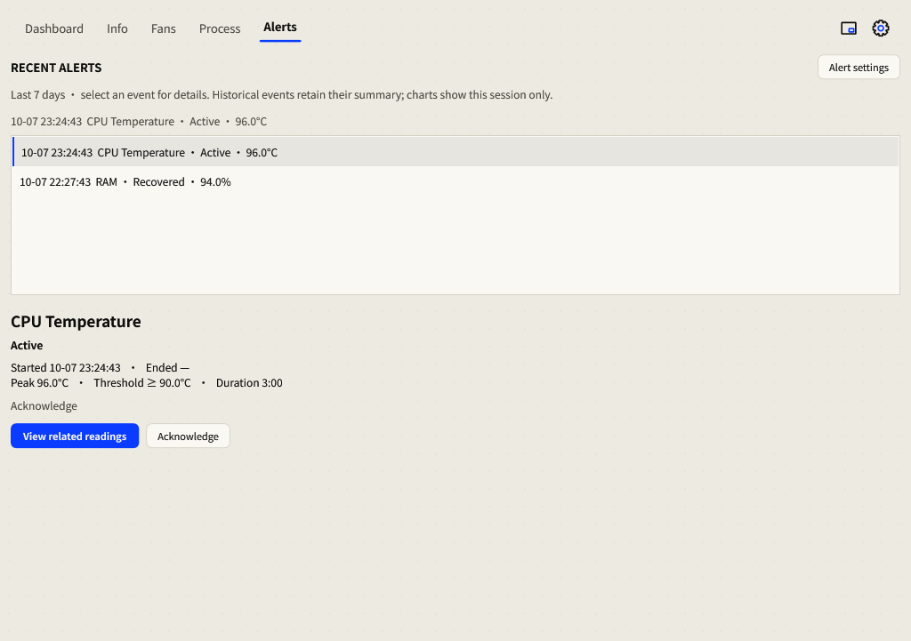

Alerts & incident history
Set sustained thresholds, then follow an event from its first breach to recovery.
Configure alerts
- Open the gear → Monitoring & alerts.
- Enable Notify on sustained threshold breaches. Choose the Primary GPU for GPU alerts.
- Review the temperature, memory and disk thresholds, sustained duration and notification cooldown.
- Press OK to commit the dialog. Cancel discards its draft.

| Default rule | Trigger |
|---|---|
| CPU temperature | Above 90 °C. |
| Primary GPU temperature | Above 85 °C. |
| RAM / GPU memory | Above 90% used. |
| Fixed disk | Below 10% free space. |
| Sustained duration | 15 seconds before the condition fires. |
| Notification cooldown | 300 seconds between eligible repeat notifications. |
Missing readings never trigger an alert. A short spike may end before the sustained duration expires. GPU alerts follow your primary-GPU preference; inspecting another GPU does not change it.
Follow up an incident
- Open Alerts, or select a Momo notification to open its event.
- Select an incident to read its threshold, start/end time, observed duration and peak or lowest value.
- Select View related readings to investigate the corresponding trend or hardware information.
- Select Acknowledge when reviewed. Acknowledgement records that you saw it; it does not repair the condition or erase its history.

Event states
- Active: the sustained condition is still observed.
- Recovered: a later valid reading returned within the limit.
- Interrupted: observation ended or monitoring was interrupted; this is not a confirmed recovery.
The last seven days of events persist across restarts. Restart gaps are excluded from observed incident duration. Windows Do Not Disturb can suppress notifications; the in-app history remains the place to review events.